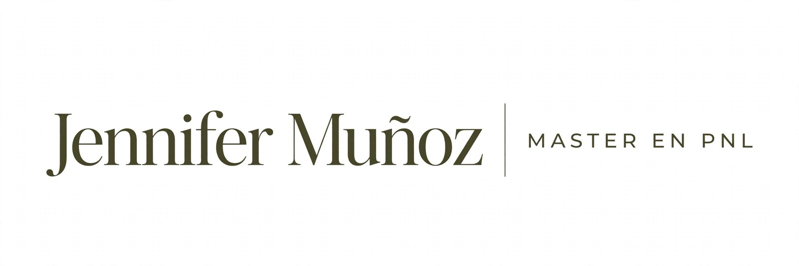
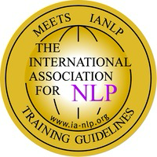

Autoestima y confianza
Reconoce tus recursos, fortalece la relación contigo y avanza con mayor seguridad.

Acompañamiento personal · 100% online
Un espacio cercano y práctico para comprender lo que estás viviendo, descubrir nuevas posibilidades y avanzar hacia cambios concretos.
Una herramienta para el cambio
La Programación Neurolingüística reúne herramientas y ejercicios que permiten explorar cómo pensamos, interpretamos nuestras experiencias y construimos determinados patrones.
En las sesiones utilizamos estas herramientas de manera práctica y personalizada, de acuerdo con aquello que quieres trabajar y el objetivo que deseas alcanzar.
Principales áreas de acompañamiento
Cada experiencia es diferente. Las sesiones se adaptan a tu historia, tus necesidades y los objetivos que quieres alcanzar.
Reconoce tus recursos, fortalece la relación contigo y avanza con mayor seguridad.
Comprende lo que sientes y encuentra nuevas herramientas para transitar procesos de cambio.
Identifica patrones de pensamiento que te limitan y construye alternativas más útiles.
También podemos trabajar relaciones y límites personales, toma de decisiones, cierres, nuevos comienzos y objetivos personales.
Mi historia
Durante más de 16 años trabajé en Recursos Humanos, acompañando personas y gestionando procesos dentro del ámbito profesional y organizacional.
En 2021 inicié mi formación en Programación Neurolingüística y descubrí una nueva forma de acompañar procesos de cambio personal. En 2022 obtuve mi certificación como Master en PNL y, desde entonces, me he dedicado al acompañamiento individual online.
Lo que comenzó como una búsqueda personal terminó convirtiéndose en mi vocación. Desde entonces he acompañado a más de 600 personas a mirar aquello que desean transformar y avanzar hacia una vida más alineada con lo que quieren para sí mismas.

Formación acreditada
Su formación puede consultarse en el registro internacional de graduados de la International Association for Neuro-Linguistic Programming.
Practitioner en PNL · 2021
Master en PNL · 2022
¿Cómo saberlo?
01Sientes que estás repitiendo patrones que quieres cambiar.
02Quieres recuperar confianza en ti.
03Estás atravesando un cambio y necesitas ordenar tus ideas.
04Quieres trabajar en tus hábitos, emociones o relaciones.
05Sabes que quieres un cambio, pero no sabes por dónde comenzar.
Primera sesión
Conversaremos sobre la situación que estás viviendo, identificaremos qué deseas trabajar y definiremos un objetivo concreto. Utilizaremos herramientas y ejercicios de PNL adaptados a ti.
Consulta por planes de sesiones y modalidades especiales.
Experiencias reales
Las reseñas son enviadas directamente por las personas acompañadas y se publican después de una revisión para proteger su privacidad.
Da el primer paso
Si sientes que este acompañamiento es para ti, escríbeme. Podemos conversar brevemente y resolver tus dudas antes de agendar.
Contáctame ↗